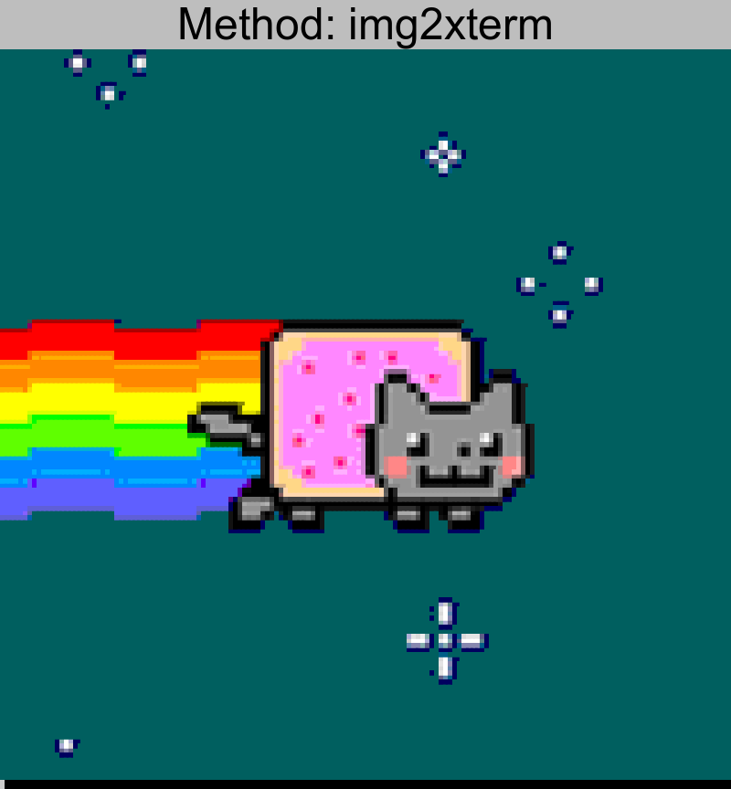
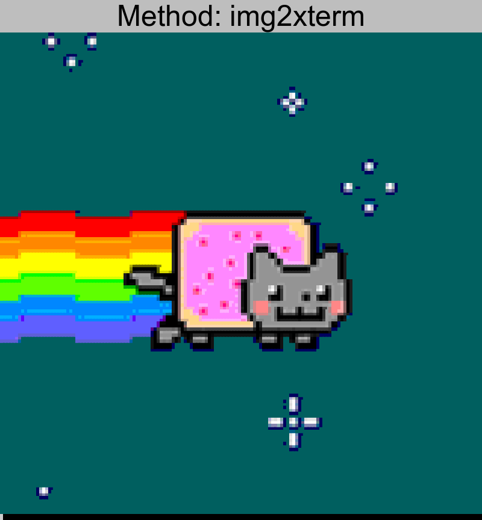
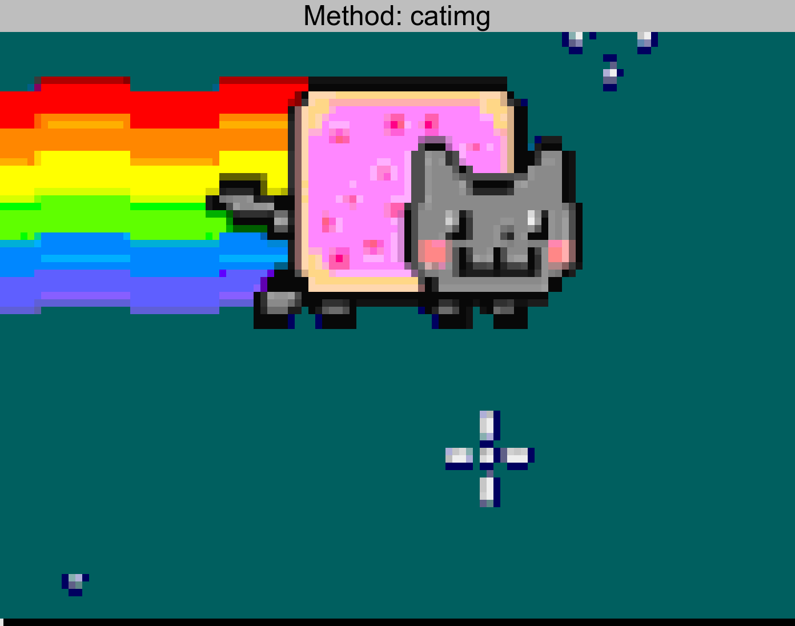
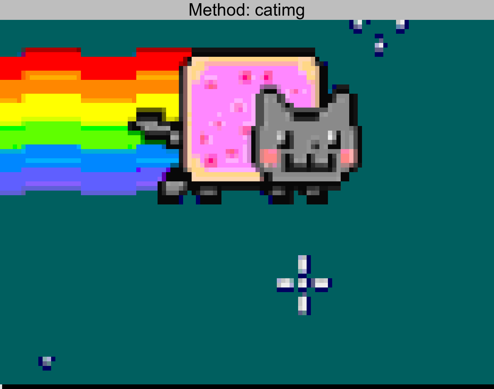
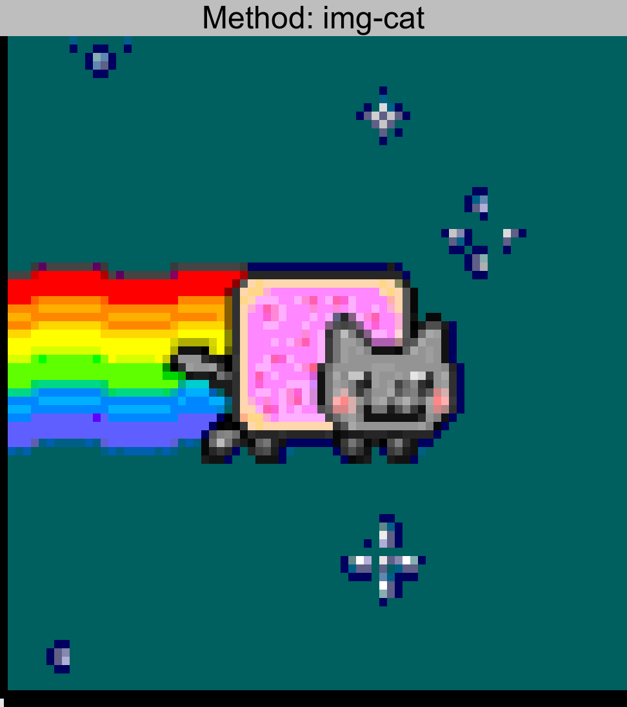
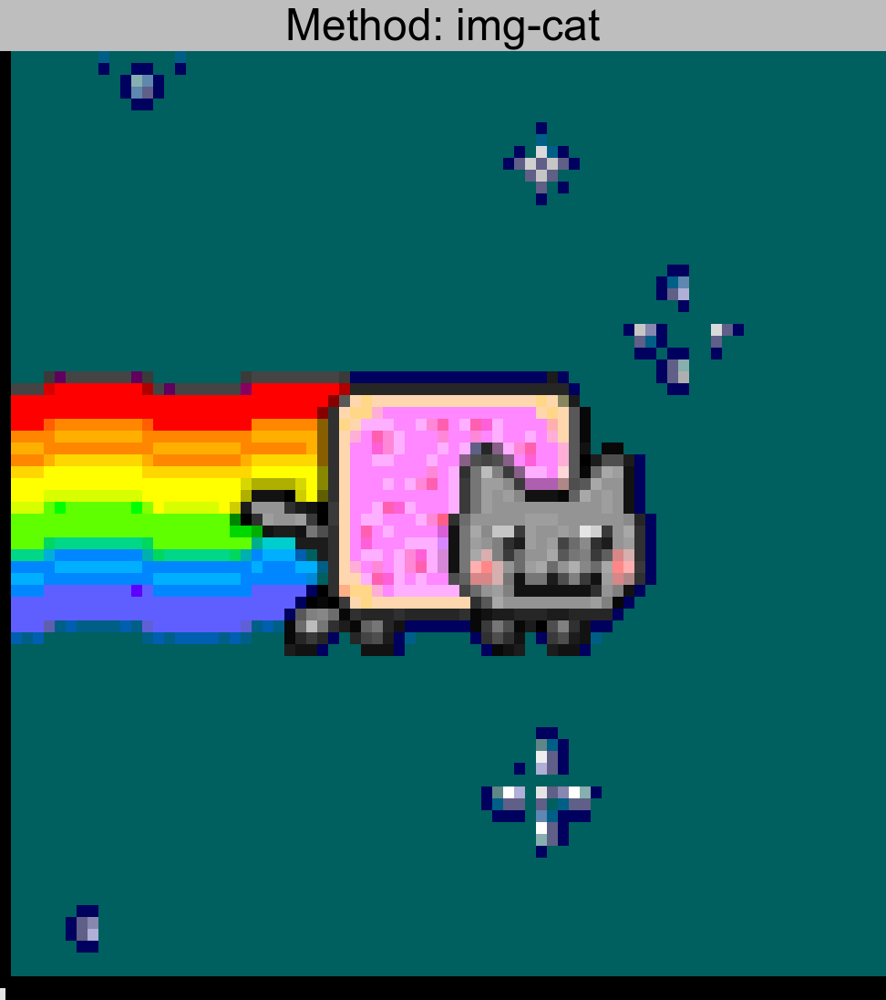

Inspired by ponysay, I think wicked
ascii/ansi artwork on the terminal is great.
I decided to survey all the tools I could find that aid in this conversion
to see if there were any dramatic differences in results.
Methodology
For these tests I used an image with a 160px width, twice that of
a standard terminal. Then I cat'd the image in plain xterm and
took a screenshot of the results.
The original has been scaled up (6X) to be the same relative size as
the resulting screenshots.
My entire methodology is on github
if you wish to see exactly how I made these images. In theory
it is 100% reproducible from make. (assuming on a linux desktop)
img2xterm stands out to me as the most
accurate and true to the original, with util-say
as a close second. Both of these tools understand “half-block”
characters with two colors, effectively doubling the horizontal resolution of the resulting
characters. (two colors per “pixel”)
catimg and img-cat
both have good color representation, but lack the additional resolution compared to the
other tools, giving it a more “pixelated” look.
img2txt and jp2a
are “true ascii” tools, they are really not in the same league as the others. I included them
here for completeness.
First you need to set the Protocol/Service Multiplexer value on both sides to “62” (0x3E) on both sides:
echo 62 > /sys/kernel/debug/bluetooth/6lowpan_psm
This PSM value lets the driver know that you are going to multiplex this special
new protocol on top of whatever your bluetooth device mith also be doing.
0x3E is some sort of temporary value I had to use to get this working, as 0x25 ended up
as a being not supported per the messages in my wireshark dump.
I’m not aware of any other way to set it other than this kernel debug setting.
Making the slave advertise
The slave must be doing Low-Energy advertisements in order for the master to connect to it.
hciconfig hci0 leadv
Connect
On the master you should be able to watch the slave advertise:
⮀hcitool lescan
LE Scan ...
C4:85:08:31:XX:XX (unknown)
C4:85:08:31:XX:XX ubuntu-0
Establish a connection from the master to the slave:
Afterwards a bt0 device should show up in ifconfig. Run hcitool conn to verify
a connection is actually established. Use wireshark on bluetooth mon mode on the
hci device to confirm commands are being sent.
The proof is in the ping:
~ ⮀ # ⮀ping6 fe80::1610:9fff:fee0:1432%bt0
PING fe80::1610:9fff:fee0:1432%bt0(fe80::1610:9fff:fee0:1432) 56 data bytes
64 bytes from fe80::1610:9fff:fee0:1432: icmp_seq=1 ttl=64 time=158 ms
64 bytes from fe80::1610:9fff:fee0:1432: icmp_seq=2 ttl=64 time=236 ms
64 bytes from fe80::1610:9fff:fee0:1432: icmp_seq=3 ttl=64 time=113 ms
Problems
After a small number of packets, the connection seems to drop, and on the master side
I get:
No matter what rmmod or stopping I tried, a reboot was the only thing I could to
rebuild the connection. Obviously this is pretty new stuff, hopefully it will
stabilize in later versions of the kernel.
At this time though, on 3.19.0-21-generic (Ubuntu Vivid), this feature is not
yet usable.
The software that powers the Etherhouse project is open source. This blog
post describes that software and how it interacts with all the pieces.
Client
You can see the Client software
that runs on the Arduino. This uses one external library and is in the native
Arduino C++.
The Arduino runs a limited TCP/IP stack and interacts with the http api.
The code plenty of defensive code in place to ensure the client continues to run
without interruption or interaction. No one should need to “turn it off and on
again.”
Etherhouse a project of mine involving eight Christmas gifts. Each gift
involved a display of some model houses made from folded paper, each
representing the home of a friend or family member.
The houses light up, depending on whether that family member is home or not.
Their presence is detected based on if their smartphone is on the same network
the etherhouse is on.
Beaker is a test framework created by
Puppetlabs to run tests against puppet modules on real servers (vm, containers
whatever) and test that they do what they say they should do.
This is a quick tutorial on how to use this framework. At the time of this
writing, Beaker is under heavy development, so this could all change.
The Gem
The first thing you need to do is install beaker. Usually this is as simple as
adding it to your Gemfile and running bundle install.
You can have different yaml files for different platforms you wish to test
against. The format is described in the
Beaker wiki
Note: I use my own docker files for speed, as they come preinstalled with the
the Beaker Host Requirements
Warning: If you use docker, you cannot test service things because there is
no init running inside the container. For comprehensive testing against things
like services, firewalls, etc, you must use a true hypervisor with Vagrant.
Acceptance Spec Helper
# consul/spec/spec_helper_acceptance.rb
require 'beaker-rspec'# Not needed for this example as our docker files have puppet installed already#hosts.each do |host|# # Install Puppet # install_puppet#endRSpec.configure do|c|# Project root
proj_root =File.expand_path(File.join(File.dirname(__FILE__), '..'))
# Readable test descriptions
c.formatter =:documentation# Configure all nodes in nodeset
c.before :suitedo# Install module and dependencies
puppet_module_install(:source=> proj_root, :module_name=>'consul')
hosts.each do|host|# Needed for the consul module to download the binary per the modulefile
on host, puppet('module', 'install', 'puppetlabs-stdlib'), { :acceptable_exit_codes=>[0,1] }
on host, puppet('module', 'install', 'nanliu/staging'), { :acceptable_exit_codes=>[0,1] }
endendend
The spec helper does the tasks needed in order to prepare your SUT (system
under test). This might include installing puppet, installing your puppet
module dependencies, etc.
Example Acceptance Test
# module_root/spec/acceptance/standard_spec.rb
require 'spec_helper_acceptance'
describe 'consul class'do
context 'default parameters'do# Using puppet_apply as a helper
it 'should work with no errors based on the example'do
pp =<<-EOS
file { '/opt/consul/':
ensure=>'directory',
owner =>'consul',
group =>'root',
} ->class { 'consul':
config_hash => {
'datacenter'=>'east-aws',
'data_dir'=>'/opt/consul',
'log_level'=>'INFO',
'node_name'=>'foobar',
'server'=>true
}
}
EOS# Run it twice and test for idempotency
expect(apply_manifest(pp).exit_code).to_not eq(1)
expect(apply_manifest(pp).exit_code).to eq(0)
end
describe service('consul') do
it { should be_enabled }
end
describe command('consul version') do
it { should return_stdout /Consul v0\.2\.0/ }
endendend
The filename is important, it must end in _spec.rb in order for the test
harness to detect it. You can see that there are many
matchers you can use to run
pretty much any kind of test you can think of.
See the puppetlabs-mysql
collection again for some great examples.
Running Them
bundle exec rake acceptance
This command will spin up your described servers in nodesets, install your
puppet modules and dependencies, and test your assertions.
Conclusion
Acceptance tests should be used sparingly, they are the top of the testing
testing pyramid.
They are slow, touch the disks and network, and depend on external resources.
The example mysql acceptance tests literally install mysql, install and
configure databases, and assert that they exist.
They will may be slow, but they can be very helpful, and potentially the
only way to really test functionality of a puppet module in an end-to-end
way.
Puppet is a system configuration management tool. Unit tests can only go
so far to make sure the compiled catalog is “correct”. Puppet acceptance
tests can help you go 100% and ensure that your module literally does
what it says it does by running tests against actual systems, files,
packages, and services.
Serf is a very interesting service discovery mechanism.
Its dynamic membership and tags capability make it very flexible. Can we use it
to generate a centralized ssh_known_hosts file?
Installing and Configuring Serf
I like to use configuration management to manage servers. Here I use a
Puppet module to
install and configure Serf:
This particular module uses a hash to translate directly into the config.json
file on disk. Notice how I’m using the new tags feature, and adding a sshrsakey
tag, populated by Puppet’s facts.
Querying The Cluster
Once the servers have Serf installed and configured, the cluster can be queried
using the serf command line tool:
Of course, no error handling or anything. This script achieves the same
result using the serf-client ruby gem.
There are libraries to connect to the Serf RPC directly for many languages,
or you can do it yourself using the msgpack RPC library
to communicate directly on the tcp socket.
Conclusion
This is just the beginning. Serf allows retrieving the status of members, but
also can spawn programs (handlers) whenever members
join or leave.
Additionally you can invoke custom events
for your own uses, like code deploys.
If you can deal with an AP discovery
and orchistration system, then Serf could be a foundation for building great things!
The first command you are running is bundle. Bundle is
kinda like virtualenv for Ruby. It makes sure that you use the same ruby
libraries that you, everyone, and puppetmasters use.
Bundle uses a Gemfile, and searches downwards. As long as you have the Gemfile
in the puppet repo, it will work.
Exec
The second part is exec. Exec is an argument to bundle, it simply means run a
command. Because you are running it in a “bundled” environment, it runs the
next command that is part of your bundle, with the ruby libraries in your
Gemfile.
Rake
The third part is rake. Rake is like Make for Ruby. It requires a Rakefile.
Each puppet module needs a Rakefile.
You don’t need to re-invent the Rakefile, simply have this in it:
require 'puppetlabs_spec_helper/rake_tasks'
This ensures that we are all running tests in the same way.
Spec
Spec is a “rake task” that runs Rspec. Rspec is a ruby testing framework.
Rspec + puppet-rspec is a whole other thing described Next Section.
How does Rspec Test Puppet Code?
If you are running bundle exec rake spec, rspec takes over in the environment
provided by bundler. It gives you all the gems necissary to do the job, but
how does Rspec know about Puppet Code?
If you are including the puppetlabs_spec_helper/rake_tasks, your
exact task
includes the prep/test/clean stuff.
You need some boilerplate files in place for rspec-puppet tests to run. You can
either run
rspec-puppet-init
Or you can manually setup the files and folders.
Here I will describe the minimal set of files you need:
.fixtures.yml
.fixtures.yml is a puppet_spec_helper construct that allows you to symlink in
other modules that might be required to test your code. For example you might
require functions from the stdlib. How does Rspec know where stdlib is?
When rspec runs the preparation parts, the spec_helper will create symlinks,
or clone repos, or whatever.
spec/spec_helper.rb
spec/spec_helper.rb is a file you need in place for your rspec tests to reference.
If you are using the puppetlabs_spec_helper gem, it is only one line:
This spec_helper.rb file can now be referenced, and by doing so will
allow Ruby to import all of the puppet-specific Rspec matchers it needs to
function.
For example, at the top of every Rspec ruby file you should see something like this:
require 'spec_helper'
describe 'my_module'do
it { should compile }
end
Directory structure
Putting files in the right places allows Rspec to autodetect them. Giving them a
conventional name allows rspec to glob them.
As the scope of your testing increases, a well-organized directory structure is
essential:
How to write puppet tests is outside the scope of this particular blog post.
I recommend looking at solid examples from puppetlabs’ github, or right from the
offical documentation.
But essentially, Rspec runs puppet in a noop mode, only generating a catelog
of what it would do. Then the rspec tests use matchers
to describe assertions against the catelog.
Whenever possible, I try to write Puppet code that is purgable and
“Comment Safe”. That is not a very good description. What I mean is, Puppet
code that removes resources from a system when the corresponding Puppet
code is “Commented” out of a manifest. Lets look at a few examples.
# Automatically remove rules that are not declared
resources { "firewall":
purge =>true
}
# Production needs 111 open
firewall { '111 open port 111':
dport =>111
}
# Tried this but didn't work. Commenting out for now# Automatically removed from the server when I commented it out# firewall { '112 open port 112':# dport => 112# }
The Point?
The point here is that we should encourage a culture of purging. Having
resources get automatically purged when you comment them out from puppet
is great.
Of course, this is obsoleted in the short-lived world of docker or possibly
Amazon EC2. But for those engineers who work on long lived servers, this
prevents cruft.
Going Further: Purging Packages
I want to purge packages. If someone installs a package not controlled by
Puppet, I want puppet to purge it. Crazy I know.
package { 'apache': ensure=> installed }
# No longer using php# But puppet leaves this behind!# package { 'php5': ensure => installed }
Of course puppet will leave the package behind. I should be doing ensure => purged
right?
But what if the package is deep within nested classes or simply manually installed?
Some day I would like to get to the point where I at least get notified when
puppet detects packages that don’t need to be there. I’m open to suggestions on
how to do this.
Going Further: Purging /etc/
Most of the time stale configuration leftover in /etc/ causes no harm.
But what about cron jobs in /etc/cron.d? I would love to purge them, but there
are non-puppet controlled things installed by system packages. If everything was
a puppet module this could eventually be achieved, but it would be too hard
to keep in sync with upstream package changes.
Purgin on a per-app basis with things like sensu,
apache, and sudo
are a great start.
Crossing the Line: Purging /var/lib/mysql
Seems like if you asked puppet to install mysql databases, and then
commented them out, you would not want puppet to purge them.
The subtle difference here might be the difference between configuration and
data.
Conclusion
Whenever possible I try to purge => true on whatever I can. I would like to see
this as the default in new puppet modules.
Someday I would like us to purge more than just files and iptables rules.
The barrier to writing Nagios checks is high. I dare say very high. You have
to think about check intervals, host groups, service groups, config files, etc.
But, I know my servers are not behaving, if only there was a way to check them!
They run commands for me all the time. In the worst case they fail and no one
knows. The best case is that they end up in my cron spam folder….
A Solution!
Sensu-shell-helper. It is
a small script I wrote to make it easier to monitor arbitrary commands with
Sensu. Here is how you use it
sensu-shell-helper apt-get update
Yes. That is it. No mandatory config options. Good defaults. Minimal overhead.
What does this check look like in the dashboard when it fails?
Exactly what I wanted. And of course, when apt-get update begins to work again,
the check will resolve itself.
Under The Hood
sensu-shell-helper reall just takes in the output of the command you ask for,
tail’s it, then sends the result to localhost:3030, which the sensu-client
listens on.
By default it does not specify any handlers. (But they can be specified on the
command line with -H) For the check-name it takes the full command and munges
it to pass the sensu validator. Duplicate instances of the exact same command
on a particular host will be seen as a single “check”.
Most commands do not return 0,1,2,3 according to the
Sensu /
Nagios plugin API,
so the sensu-shell-helper will emit 2 (critical) in the event that the
shell command returns anything non-zero. This behavior can be overridden
with -N in the case that your command does conform to the 0,1,2,3 spec.
There is no doubt that Wordpress is a great piece of software. As much as people love to hate on PHP, it runs a lot of the internet.
I’ve been running Wordpress personally and professionally for years. It only gets better. I was only hacked once :)
Rethinking What I Need
Since moving to a Low End Box, my resources have been tight. Even on a tuned system, I can’t run much more interesting things than my Nginx+PHPfpm+MySQL.
Right now I also have 32000 spam comments in my queue. Akismet does a great job, but I wonder if I even need it. All I really need is a tiny corner of the web, read only is ok.
What I Lose
Comments
Cool plugins
Well trusted codebase
Easy to use gui
Familiar Workflow
What I Gain
Immutability and hackproof deployment
Entire classes of server maintenance issues disappear
Git!
Grep-able blogs
Making The Change
I’m thankful for the excellent Octopress software.


 

 

 
